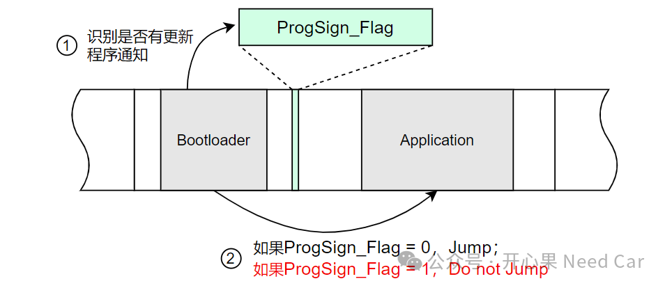
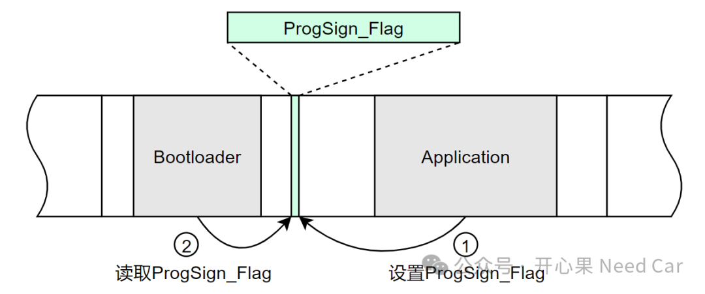
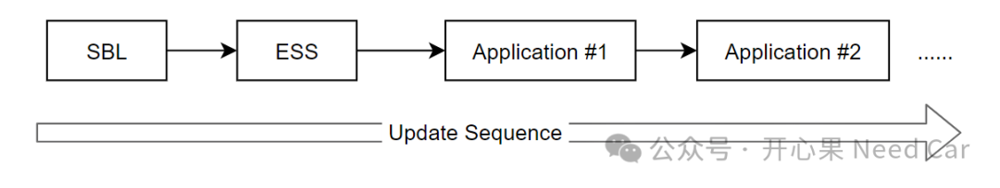

开心果 Need Car · 2024-03-04T06:58:00+08:00 · 微信原文
Q1：Application如何通知Bootloader更新请求？

Q2：更新标志位ProgSign_Flag应该设置到哪里？
A2：工程中常见的做法，将ProgSign_Flag设置在软复位不清除内存区，即：Static RAM（静态RAM），该区域由Application程序和Bootloader程序共享，地址固定，示意如下。此方法的具体操作，可以参考前文《Boot开发：App诊断请求（$10 02/82）信息"传递"给Boot方式（三）》。

如果Application设置了ProgSign_Flag，当Bootloader识别到ProgSign_Flag更新请求以后，Bootloader需要清除ProgSign_Flag（eg：ProgSign_Flag = 0）。
当然，这并不是唯一实现方式。也可以通过一些寄存器实现，具体可以参考前文《Boot开发：App诊断请求（$10 02/82）信息"传递"给Boot方式（一）》。
Q3：ESS更新时机
A3：关于ESS（ECU Software Structure）是什么？什么作用？可以参考前文《信息安全：软件认证，知识点梳理》。ESS中包含着整个软件内存分布、验签等重要信息，只有这些信息可靠，方可进行后续软件组件的更新，因此，ESS的刷写需要在SBL（Secondary Bootloader）之后。

Q4：SBL是否需要验证（Verfication）?
Q5：擦除例程是否需要检查接收内存的合法性？
A5：需要。不同的芯片系列、同一芯片系列不同型号之间的Memory存在一定差异。如何对无效的内存区进行操作（eg：读、擦、写），常常会出发Bus Error的Trap。所以，为了提高程序刷写的可靠性，在Erase Memory时，需要先检查操作内存范围的合法性。
往期精彩回顾
Autosar网络管理：Bus Sleep模式下，如何接收网络管理报文？